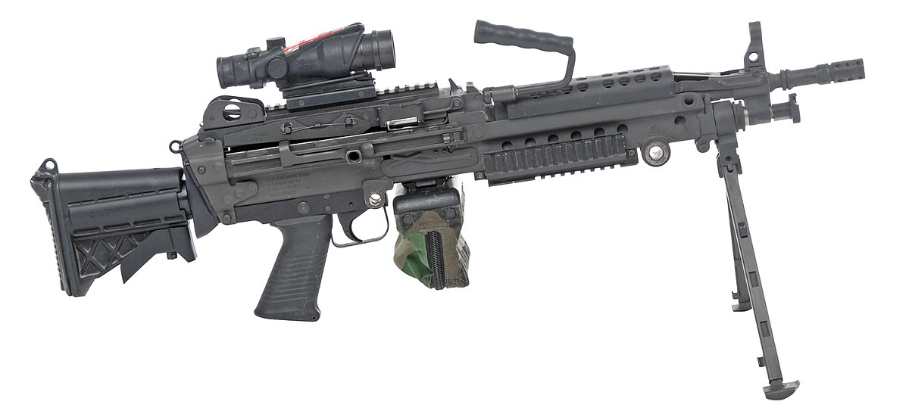
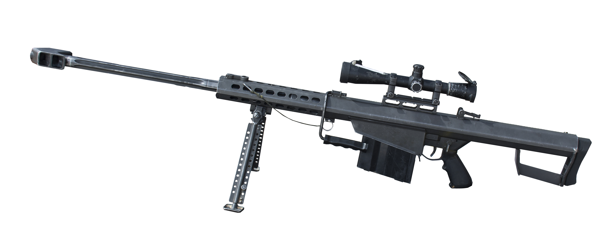
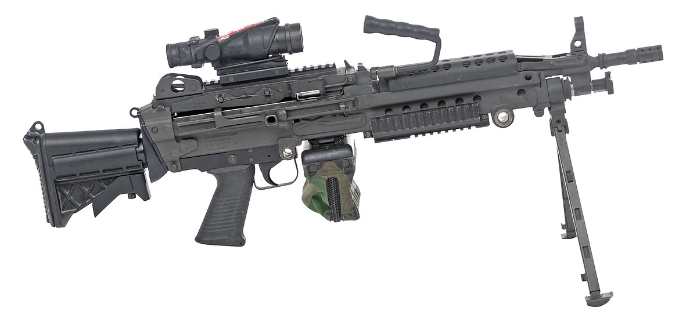
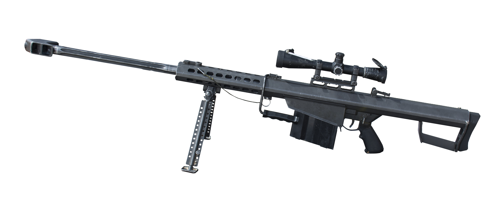

FUSILES

 




Fusiles de Asalto
Nuestros Fusiles son conocido por su diseño compacto y su capacidad para disparar ráfagas automáticas. Su tamaño reducido y su peso ligero lo hacen adecuado para su uso en espacios reducidos y en situaciones de combate cercano. Además, su cargador de alta capacidad permite una mayor cantidad de disparos antes de tener que recargar.